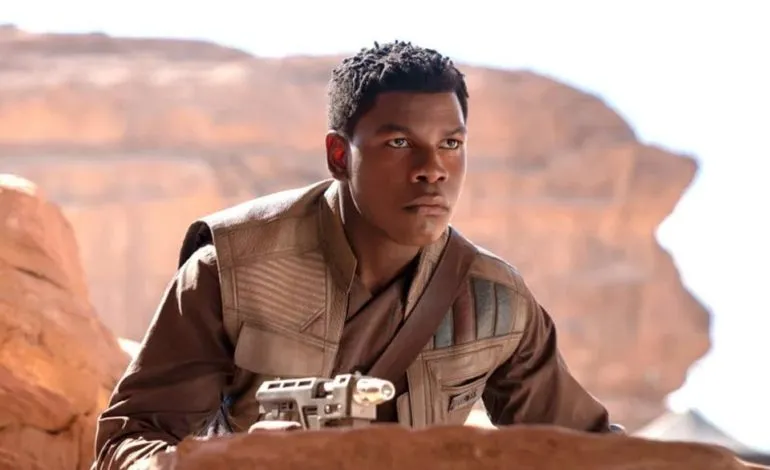
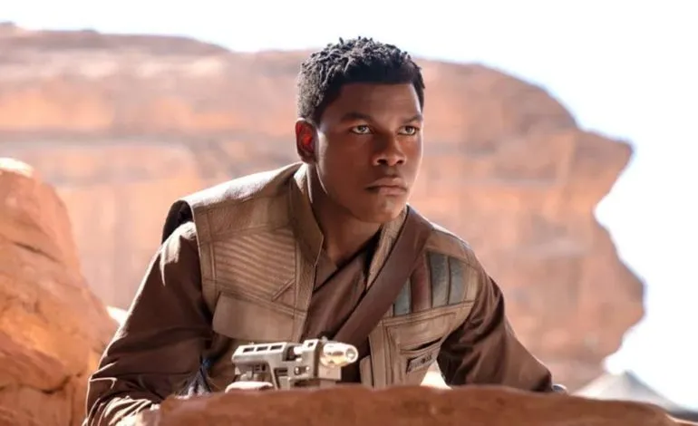

Finn, formerly designated FN-2187 was a Force-sensitive human male stormtrooper who served the First Order until his desertion and subsequent defection to the Resistance during the First Order/Resistance War. Though trained since birth to be a loyal and obedient soldier, FN-2187's conscience conflicted with the methods of the First Order. For a time he was unwilling to support the Resistance, hoping to escape the galactic conflict instead of fighting for a cause he believed was doomed to fail. As the galaxy became consumed by war, the renegade trooper was ultimately forced to decide where his true loyalties lay..
Born in 11 ABY during the New Republic Era, FN-2187 was part of a new generation of stormtroopers—human children conscripted into the military forces of the First Order—modeled on the Republic clone troopers and Imperial stormtroopers of the past. He originally trained with Batch Eight before joining the FN Corps, a sub-branch of the Stormtrooper Corps, and although his potential was recognized by his commanding officers, FN-2187 lacked the ruthlessness that had become common in the ranks under the influence of Captain Phasma. In the waning days of the Cold War, he hesitated to kill civilians during his first mission and consequently decided to desert after witnessing the massacre of Tuanul. Lacking experience as a pilot, FN-2187 freed a Resistance prisoner, Commander Poe Dameron, who coined the nickname "Finn" to supplant the renegade stormtrooper's alphanumeric designation. He then sought his own freedom while forming friendships with the Jakku scavenger Rey and the droid BB-8, as well as the Rebel war heroes Han Solo and Chewbacca.
After the destruction of the New Republic, Finn provided the Resistance with the information they needed to destroy the First Order's superweapon, Starkiller Base. During the attack, he was defeated and nearly killed by the dark warrior Kylo Ren. Rescued by Rey and Chewbacca, Finn recuperated from his injuries and by the time he awoke, the Resistance was forced to evacuate their base on D'Qar. Despite attempting to escape from the conflict once more, a mission with Rose Tico convinced Finn to truly join the Resistance to the extent where he nearly sacrificed his life for their cause during the Battle of Crait in 34 ABY. In 35 ABY, Finn continued assisting the Resistance by joining Rey on the quest to find the Sith wayfinder and destroy the malevolent religion once and for all, eventually becoming a general along with Poe after Leia's passing, with his first mission as a general being spent leading the ground forces during the Battle of Exegol.